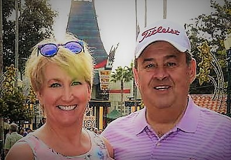
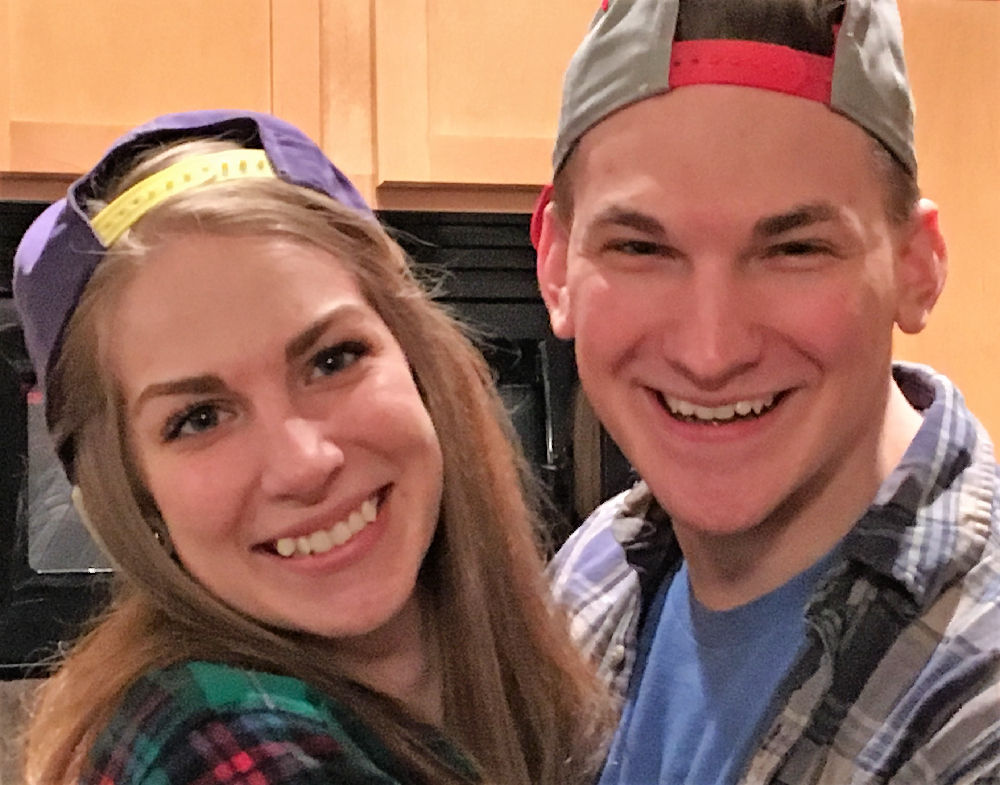
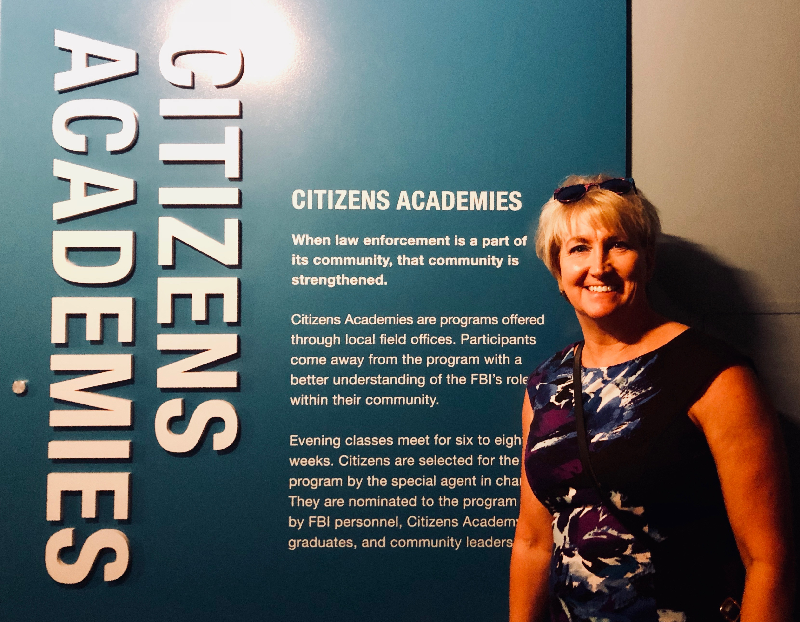
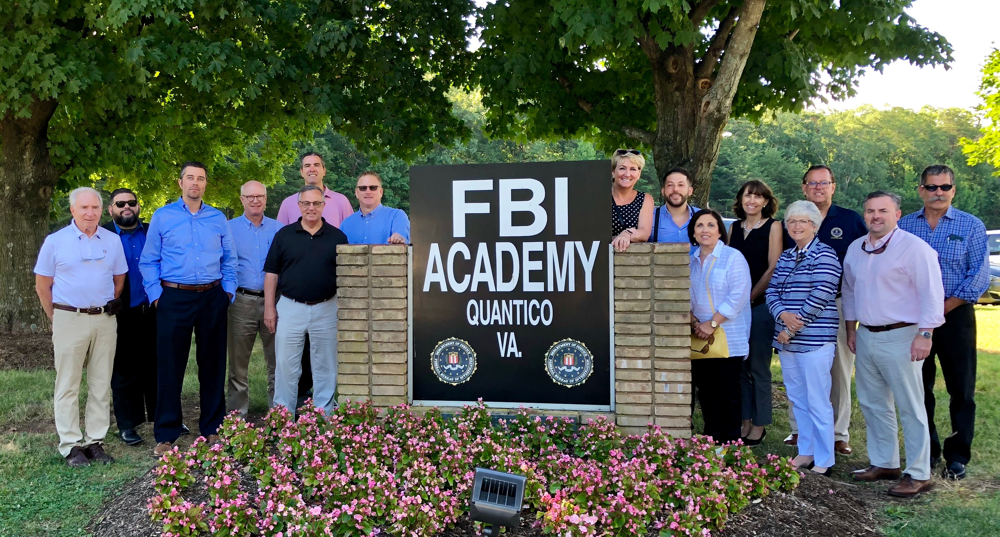

Lynn is a wife and mother of two grown children. She grew up in Hudson, OH and moved to Rochester, NY for 27 years. Lynn came back to Cleveland in 2015. Lynn is a member of the FBI Cleveland Citizens Academy Alumni Association, which she became Treasurer of the Board of Directors.

Lynn and George Hillow

Lynn's children, Victoria and Matthew

Lynn Visiting the FBI Citizens Academy in Washington DC

Lynn Visiting the FBI with classmates in Washington DC